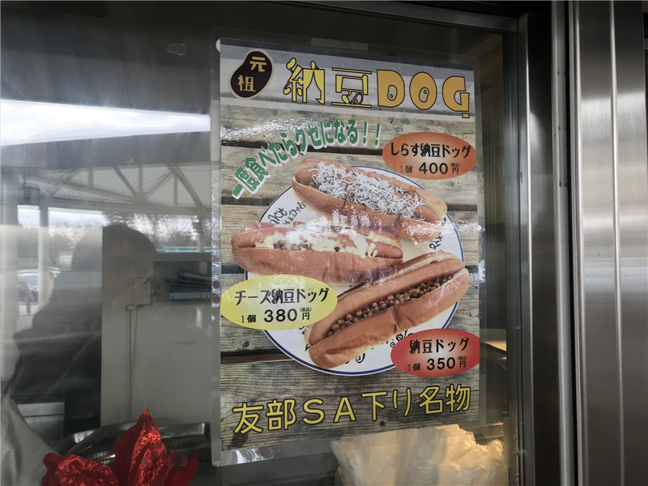

12月2日：じいちゃんの墓参りに行った（納豆は要らない
公開日：
母の妹さんの旦那さん（← なんて呼ぶんですかね）のクルマで、ひたちまでじいちゃんの墓参りに。父方の墓参り（伊賀）はよく行くけど、母方はあまりいかない。いろいろ理由はあるんだが、行きたくないわけではけっしてなく、なんというかあまりチャンスがないのだよね。今回が多分2年ぶり3回目ぐらい。不義理な孫で申し訳ない。
納豆ドッグ

行きは常磐道・友部 SA でご休憩。軽く朝ご飯を食べようと目にしたのがこれ――納豆ドッグ。納豆はそんなに得意じゃないし、納豆が入っていないほうが絶対おいしいだろうなってのはわかってたのだけど、せっかくここまで来たのだし、と思い買ってしまった。
できあがりまで5分ぐらい。チーズも追加してもらった。ぱっと見は納豆が入ってないようにも見えたけど――
よく見たらちゃんと入ってる。味は……マズくはないけど。、別にハーモニーがあるわけでもなく、やっぱり納豆は不要だった。叔父さんがたべてた常陸牛のコロッケドッグのほうがだいぶおいしそうだった。
今日の教訓：ホットドッグに納豆は要らない。
墓参り
じいちゃんの墓は、創価学会の墓地にある。自分は別に学会員じゃないので若干アウェー感があるんだが、緑が多くて、あと、墓石が質素でみんな揃っているのは個人的には好きだ（大作先生の墓がどうなるのかは知らんがｗ）。
母方はみな熱心で、なくなった祖父ちゃんもたいそう信心厚い人だった。うちのおかんなども南無妙法蓮華経？を毎日読経していて、暗唱もできる。他所を見ると、そういう家は息子・娘にも信心を進めることが多いようだけど、うちは無理に押し付けてこない。信者を増やさないことに肩身狭く感じることもあろうに、なかなかできたところだと思ってる。おかげで自分は自由？だ。
とはいえ、宗教で心が安らぎ、魂を律することができるのであれば、それに如くはない。むしろ、自分にそう言うのがないのは少しダメなのではないかとも感じる。おおよそ人間というもの、誰にみられるわけでもなく善をなすのが最上で、神・仏の目を背中に感じながら成すのが次善で、見返りを求めてやるのが凡、何もなさないばかりか、悪事に走るのが下というものだ。自分は最上ではなく、かといって神・仏にも縁のない人間だから、よくて凡、それ以下というわけだ。心しなければならない。
おいなりさん＋おそば
墓参りの帰りは笠間によって、おいなりさんとおそばを食べた。大きな稲荷神社があるからかな、おいなりさんが名物っぽくなっているのは。あとは焼き栗がおいしそうだった。
クルマを出してもらった上に運転まで全部任せてしまったので（運転免許証を置いてきてしまった／(^o^)＼）、ここはわいの驕りや！ いろんな種類のお稲荷さんがあって面白かったけど、個人的にはクルミ？の入ったやつが意外においしい。またリピートしてもいいなって思う。